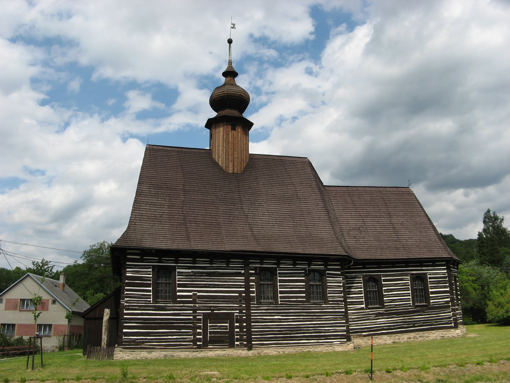

Attractions of Hamarschen
Due to Hamarschen being a medieval town where the Church reigns supreme, fun is all but outlawed. Despite this, the town hosts an array of Church-sanctioned attractions to enjoy.
The Church of Hamarschen
The Church of Hamarschen was founded 15 years ago to satisfy the spiritual needs of city residents. Visitors cam enjoy a fortnightly event known as "The Witch's Demise" where suspected witches of the realm our brought to the church for public execution.
Market Square
Located in the center of Hamarschen, the Market Square hosts a variety of market stalls that offer a variety of local goods such as venison, wild pork, lumber, and much more!
Replica Roman Bathhouse
To draw in more visitors, the council of Hamarschen decided to erect a fully-funcional replica of a Roman bathhouse. Unfortunately no architects reside within Hamarschen, so the bathhouse ended up being purely aesthetic.